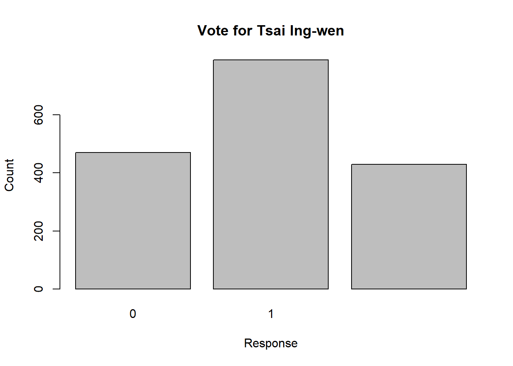
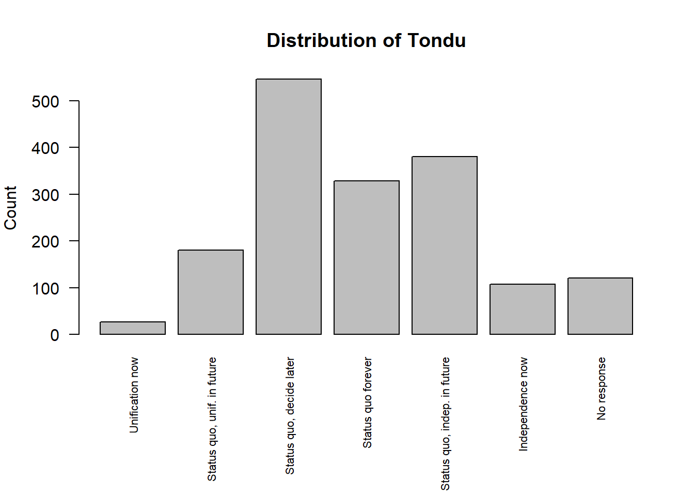

library(haven)
TEDS_2016 <- haven::read_dta(
"https://github.com/datageneration/home/blob/master/DataProgramming/data/TEDS_2016.dta?raw=true"
)Assignment 1
1. Load the dataset (TEDS 2016)
2. Initial checks
dim(TEDS_2016)[1] 1690 54names(TEDS_2016) [1] "District" "Sex" "Age" "Edu"
[5] "Arear" "Career" "Career8" "Ethnic"
[9] "Party" "PartyID" "Tondu" "Tondu3"
[13] "nI2" "votetsai" "green" "votetsai_nm"
[17] "votetsai_all" "Independence" "Unification" "sq"
[21] "Taiwanese" "edu" "female" "whitecollar"
[25] "lowincome" "income" "income_nm" "age"
[29] "KMT" "DPP" "npp" "noparty"
[33] "pfp" "South" "north" "Minnan_father"
[37] "Mainland_father" "Econ_worse" "Inequality" "inequality5"
[41] "econworse5" "Govt_for_public" "pubwelf5" "Govt_dont_care"
[45] "highincome" "votekmt" "votekmt_nm" "Blue"
[49] "Green" "No_Party" "voteblue" "voteblue_nm"
[53] "votedpp_1" "votekmt_1" summary(TEDS_2016) District Sex Age Edu Arear
Min. : 201 Min. :1.000 Min. :1.0 Min. :1.000 Min. :1.000
1st Qu.:1401 1st Qu.:1.000 1st Qu.:2.0 1st Qu.:2.000 1st Qu.:1.000
Median :6406 Median :1.000 Median :3.0 Median :3.000 Median :3.000
Mean :4661 Mean :1.486 Mean :3.3 Mean :3.334 Mean :2.744
3rd Qu.:6604 3rd Qu.:2.000 3rd Qu.:5.0 3rd Qu.:5.000 3rd Qu.:4.000
Max. :6806 Max. :2.000 Max. :5.0 Max. :9.000 Max. :6.000
Career Career8 Ethnic Party
Min. :1.000 Min. :1.000 Min. :1.000 Min. : 1.00
1st Qu.:1.000 1st Qu.:2.000 1st Qu.:1.000 1st Qu.: 5.00
Median :2.000 Median :4.000 Median :1.000 Median : 7.00
Mean :2.683 Mean :3.811 Mean :1.658 Mean :13.02
3rd Qu.:4.000 3rd Qu.:5.000 3rd Qu.:2.000 3rd Qu.:25.00
Max. :5.000 Max. :8.000 Max. :9.000 Max. :26.00
PartyID Tondu Tondu3 nI2
Min. :1.000 Min. :1.000 Min. :1.000 Min. : 1.00
1st Qu.:2.000 1st Qu.:3.000 1st Qu.:2.000 1st Qu.: 1.00
Median :2.000 Median :4.000 Median :2.000 Median : 3.00
Mean :4.522 Mean :4.127 Mean :2.667 Mean :35.13
3rd Qu.:9.000 3rd Qu.:5.000 3rd Qu.:3.000 3rd Qu.:98.00
Max. :9.000 Max. :9.000 Max. :9.000 Max. :98.00
votetsai green votetsai_nm votetsai_all
Min. :0.0000 Min. :0.0000 Min. :0.0000 Min. :0.0000
1st Qu.:0.0000 1st Qu.:0.0000 1st Qu.:0.0000 1st Qu.:0.0000
Median :1.0000 Median :0.0000 Median :1.0000 Median :1.0000
Mean :0.6265 Mean :0.3781 Mean :0.6265 Mean :0.5478
3rd Qu.:1.0000 3rd Qu.:1.0000 3rd Qu.:1.0000 3rd Qu.:1.0000
Max. :1.0000 Max. :1.0000 Max. :1.0000 Max. :1.0000
NA's :429 NA's :429 NA's :248
Independence Unification sq Taiwanese
Min. :0.0000 Min. :0.0000 Min. :0.0000 Min. :0.0000
1st Qu.:0.0000 1st Qu.:0.0000 1st Qu.:0.0000 1st Qu.:0.0000
Median :0.0000 Median :0.0000 Median :1.0000 Median :1.0000
Mean :0.2888 Mean :0.1225 Mean :0.5172 Mean :0.6272
3rd Qu.:1.0000 3rd Qu.:0.0000 3rd Qu.:1.0000 3rd Qu.:1.0000
Max. :1.0000 Max. :1.0000 Max. :1.0000 Max. :1.0000
edu female whitecollar lowincome
Min. :1.000 Min. :0.0000 Min. :0.0000 Min. :1.000
1st Qu.:2.000 1st Qu.:0.0000 1st Qu.:0.0000 1st Qu.:4.000
Median :3.000 Median :0.0000 Median :1.0000 Median :5.000
Mean :3.301 Mean :0.4864 Mean :0.5373 Mean :4.343
3rd Qu.:5.000 3rd Qu.:1.0000 3rd Qu.:1.0000 3rd Qu.:5.000
Max. :5.000 Max. :1.0000 Max. :1.0000 Max. :5.000
NA's :10
income income_nm age KMT
Min. : 1.000 Min. : 1.000 Min. : 20.00 Min. :0.0000
1st Qu.: 3.000 1st Qu.: 2.000 1st Qu.: 35.00 1st Qu.:0.0000
Median : 5.500 Median : 5.000 Median : 49.00 Median :0.0000
Mean : 5.324 Mean : 5.281 Mean : 49.11 Mean :0.2296
3rd Qu.: 7.000 3rd Qu.: 8.000 3rd Qu.: 61.00 3rd Qu.:0.0000
Max. :10.000 Max. :10.000 Max. :100.00 Max. :1.0000
NA's :330
DPP npp noparty pfp
Min. :0.0000 Min. :0.00000 Min. :0.0000 Min. :0.00000
1st Qu.:0.0000 1st Qu.:0.00000 1st Qu.:0.0000 1st Qu.:0.00000
Median :0.0000 Median :0.00000 Median :0.0000 Median :0.00000
Mean :0.3497 Mean :0.02544 Mean :0.3716 Mean :0.01893
3rd Qu.:1.0000 3rd Qu.:0.00000 3rd Qu.:1.0000 3rd Qu.:0.00000
Max. :1.0000 Max. :1.00000 Max. :1.0000 Max. :1.00000
South north Minnan_father Mainland_father
Min. :0.0000 Min. :0.0000 Min. :0.0000 Min. :0.0000
1st Qu.:0.0000 1st Qu.:0.0000 1st Qu.:0.0000 1st Qu.:0.0000
Median :0.0000 Median :0.0000 Median :1.0000 Median :0.0000
Mean :0.4947 Mean :0.4799 Mean :0.7225 Mean :0.1024
3rd Qu.:1.0000 3rd Qu.:1.0000 3rd Qu.:1.0000 3rd Qu.:0.0000
Max. :1.0000 Max. :1.0000 Max. :1.0000 Max. :1.0000
Econ_worse Inequality inequality5 econworse5
Min. :0.0000 Min. :0.0000 Min. :1.000 Min. :1.000
1st Qu.:0.0000 1st Qu.:1.0000 1st Qu.:4.000 1st Qu.:3.000
Median :1.0000 Median :1.0000 Median :5.000 Median :4.000
Mean :0.5544 Mean :0.9355 Mean :4.495 Mean :3.644
3rd Qu.:1.0000 3rd Qu.:1.0000 3rd Qu.:5.000 3rd Qu.:4.000
Max. :1.0000 Max. :1.0000 Max. :5.000 Max. :5.000
Govt_for_public pubwelf5 Govt_dont_care highincome
Min. :0.0000 Min. :1.000 Min. :0.0000 Min. :0.0000
1st Qu.:0.0000 1st Qu.:2.000 1st Qu.:0.0000 1st Qu.:0.0000
Median :0.0000 Median :3.000 Median :0.0000 Median :1.0000
Mean :0.4249 Mean :2.877 Mean :0.4988 Mean :0.5765
3rd Qu.:1.0000 3rd Qu.:4.000 3rd Qu.:1.0000 3rd Qu.:1.0000
Max. :1.0000 Max. :5.000 Max. :1.0000 Max. :1.0000
NA's :330
votekmt votekmt_nm Blue Green No_Party
Min. :0.0000 Min. :0.0000 Min. :0 Min. :0 Min. :0
1st Qu.:0.0000 1st Qu.:0.0000 1st Qu.:0 1st Qu.:0 1st Qu.:0
Median :0.0000 Median :0.0000 Median :0 Median :0 Median :0
Mean :0.2053 Mean :0.2752 Mean :0 Mean :0 Mean :0
3rd Qu.:0.0000 3rd Qu.:1.0000 3rd Qu.:0 3rd Qu.:0 3rd Qu.:0
Max. :1.0000 Max. :1.0000 Max. :0 Max. :0 Max. :0
NA's :429
voteblue voteblue_nm votedpp_1 votekmt_1
Min. :0.0000 Min. :0.0000 Min. :0.0000 Min. :0.0000
1st Qu.:0.0000 1st Qu.:0.0000 1st Qu.:0.0000 1st Qu.:0.0000
Median :0.0000 Median :0.0000 Median :1.0000 Median :0.0000
Mean :0.2787 Mean :0.3735 Mean :0.5256 Mean :0.2309
3rd Qu.:1.0000 3rd Qu.:1.0000 3rd Qu.:1.0000 3rd Qu.:0.0000
Max. :1.0000 Max. :1.0000 Max. :1.0000 Max. :1.0000
NA's :429 NA's :187 NA's :187 The TEDS 2016 dataset contains 1690 observations and 54 variables. The variables required for this assignment, including Tondu, female, DPP, age, income, edu, Taiwanese, Econ_worse, and votetsai, are all available in the dataset.
3. Problems encountered
Several issues arise when working with the TEDS 2016 dataset.
First, there are missing values in multiple variables. For example, variables such as votetsai, votetsai_nm, votetsai_all, edu, and highincome contain a noticeable number of NA values. This can affect statistical analysis and must be handled carefully.
Second, many variables are stored as numeric codes even though they represent categories. For example, Tondu, female, and DPP are numeric but represent qualitative responses. Without proper labeling, interpretation of results becomes difficult.
Third, some variables appear to include special numeric codes for no-response, such as values like 98 or 99. These are not actual data values and should be treated as missing or separate categories.
Finally, the dataset is imported from a Stata file, so some variables may be in a labelled format, which can cause issues when using R functions unless they are properly converted.
4. Dealing with missing values
# Check missing values
colSums(is.na(TEDS_2016)) District Sex Age Edu Arear
0 0 0 0 0
Career Career8 Ethnic Party PartyID
0 0 0 0 0
Tondu Tondu3 nI2 votetsai green
0 0 0 429 0
votetsai_nm votetsai_all Independence Unification sq
429 248 0 0 0
Taiwanese edu female whitecollar lowincome
0 10 0 0 0
income income_nm age KMT DPP
0 330 0 0 0
npp noparty pfp South north
0 0 0 0 0
Minnan_father Mainland_father Econ_worse Inequality inequality5
0 0 0 0 0
econworse5 Govt_for_public pubwelf5 Govt_dont_care highincome
0 0 0 0 330
votekmt votekmt_nm Blue Green No_Party
0 429 0 0 0
voteblue voteblue_nm votedpp_1 votekmt_1
0 429 187 187 There are several ways to handle missing values in the dataset.
First, missing values can be ignored in calculations by using functions with the argument na.rm = TRUE. For example, when calculating the mean of a variable, we can exclude missing values.
Second, observations with missing values can be removed using functions such as na.omit() when necessary.
Third, if missing values represent a meaningful category (such as “No response”), they can be kept and analyzed separately.
The choice of method depends on the type of analysis being performed.
5. Tondu relationships
# Tondu distribution
table(TEDS_2016$Tondu, useNA = "ifany")
1 2 3 4 5 6 9
27 180 546 328 380 108 121 # Tondu and female
table(TEDS_2016$Tondu, TEDS_2016$female, useNA = "ifany")
0 1
1 13 14
2 118 62
3 295 251
4 151 177
5 206 174
6 54 54
9 31 90# Tondu and DPP
table(TEDS_2016$Tondu, TEDS_2016$DPP, useNA = "ifany")
0 1
1 26 1
2 147 33
3 378 168
4 256 72
5 144 236
6 38 70
9 110 11# Tondu and age (mean age by Tondu)
tapply(TEDS_2016$age, TEDS_2016$Tondu, mean, na.rm = TRUE) 1 2 3 4 5 6 9
57.92593 55.73889 45.81502 52.76524 42.36579 47.95370 64.52066 # Tondu and income
table(TEDS_2016$Tondu, TEDS_2016$income, useNA = "ifany")
1 2 3 4 5 5.5 6 7 8 9 10
1 7 3 2 1 0 5 4 0 2 2 1
2 23 12 11 14 22 20 17 12 16 13 20
3 47 42 43 34 52 96 48 38 56 36 54
4 50 25 19 24 18 76 24 20 24 19 29
5 38 23 23 38 36 52 23 39 35 31 42
6 27 7 8 7 7 21 7 5 6 4 9
9 35 7 5 1 5 60 2 1 1 2 2# Tondu and education
table(TEDS_2016$Tondu, TEDS_2016$edu, useNA = "ifany")
1 2 3 4 5 <NA>
1 10 3 10 1 2 1
2 31 14 58 31 45 1
3 60 49 157 71 208 1
4 71 45 93 36 80 3
5 36 30 88 34 192 0
6 32 11 31 8 26 0
9 82 9 12 5 9 4# Tondu and Taiwanese identity
table(TEDS_2016$Tondu, TEDS_2016$Taiwanese, useNA = "ifany")
0 1
1 16 11
2 132 48
3 244 302
4 136 192
5 49 331
6 4 104
9 49 72# Tondu and Econ_worse
table(TEDS_2016$Tondu, TEDS_2016$Econ_worse, useNA = "ifany")
0 1
1 14 13
2 78 102
3 239 307
4 157 171
5 155 225
6 39 69
9 71 50To explore the relationship between Tondu and other variables, I used simple descriptive methods.
For categorical variables such as female, DPP, income, edu, Taiwanese, and Econ_worse, I used cross-tabulation with the table() function. This helps to compare how the distribution of Tondu changes across groups.
For numeric variables such as age, I used the tapply() function to calculate the average value of age within each Tondu category.
The distribution of the Tondu variable shows that most respondents prefer middle positions. The highest category is value 3, followed by 5 and 4. Very few people choose extreme positions such as 1.
When comparing Tondu with gender (female), the distribution looks quite similar between males and females. There is no very strong difference, although some categories have slightly higher counts for one group.
For political party (DPP), there is a clearer pattern. People who support DPP are more concentrated in certain Tondu categories, especially in categories related to independence. This suggests that political preference is related to views on unification versus independence.
Looking at age, the average age differs across Tondu groups. Some categories have younger respondents, while others have older respondents. For example, category 9 has a much higher average age compared to others. This shows that age may be related to political views.
For income and education, the distributions vary across Tondu categories, but the differences are not extremely large. However, some categories have more people in higher income or education levels.
For Taiwanese identity (Taiwanese), there is a noticeable pattern. People who identify as Taiwanese are more concentrated in certain Tondu categories, especially those closer to independence. This suggests identity plays an important role.
Finally, for economic perception (Econ_worse), there are some differences across Tondu categories, but the pattern is not very strong. This means economic perception may have a weaker relationship with Tondu compared to political identity or party support.
6. Tondu & Votesai
# votetsai distribution
table(TEDS_2016$votetsai, useNA = "ifany")
0 1 <NA>
471 790 429 prop.table(table(TEDS_2016$votetsai, useNA = "ifany"))
0 1 <NA>
0.2786982 0.4674556 0.2538462 # relationship: Tondu and votetsai
table(TEDS_2016$Tondu, TEDS_2016$votetsai, useNA = "ifany")
0 1 <NA>
1 14 6 7
2 97 48 35
3 173 229 144
4 132 112 84
5 36 274 70
6 8 79 21
9 11 42 68# proportions (better interpretation)
prop.table(table(TEDS_2016$Tondu, TEDS_2016$votetsai), margin = 2)
0 1
1 0.029723992 0.007594937
2 0.205944798 0.060759494
3 0.367303609 0.289873418
4 0.280254777 0.141772152
5 0.076433121 0.346835443
6 0.016985138 0.100000000
9 0.023354565 0.053164557# barplot
barplot(table(TEDS_2016$votetsai, useNA = "ifany"),
main = "Vote for Tsai Ing-wen",
xlab = "Response",
ylab = "Count")
To analyze the votetsai variable, I used frequency tables and proportions with the table() and prop.table() functions. I also used a cross-tabulation between Tondu and votetsai to examine their relationship. A bar chart was created to visualize the distribution of votetsai.
The distribution of the votetsai variable shows that 790 respondents voted for Tsai Ing-wen (value 1), while 471 did not (value 0), and 429 observations are missing. This means that more people in the sample supported Tsai Ing-wen than opposed her.
The relationship between Tondu and votetsai shows a clear pattern. Respondents in categories closer to independence (such as categories 3 and 5) are more likely to vote for Tsai Ing-wen. For example, in category 5, a large number of respondents voted for Tsai.
In contrast, respondents in categories closer to unification (such as category 1) are less likely to vote for Tsai Ing-wen. The number of people voting for her in these categories is much lower.
Overall, the results suggest that political preference on the unification–independence scale (Tondu) is strongly related to voting behavior. People who prefer independence are more likely to support the DPP candidate, while those closer to unification are less likely to do so.
7. Frequency table and barchart of the Tondu variable
TEDS_2016$Tondu <- as.numeric(TEDS_2016$Tondu)
# Assigning labels
TEDS_2016$Tondu <- factor(
TEDS_2016$Tondu,
labels = c("Unification now",
"Status quo, unif. in future",
"Status quo, decide later",
"Status quo forever",
"Status quo, indep. in future",
"Independence now",
"No response")
)# Frequency table
table(TEDS_2016$Tondu)
Unification now Status quo, unif. in future
27 180
Status quo, decide later Status quo forever
546 328
Status quo, indep. in future Independence now
380 108
No response
121 prop.table(table(TEDS_2016$Tondu))
Unification now Status quo, unif. in future
0.01597633 0.10650888
Status quo, decide later Status quo forever
0.32307692 0.19408284
Status quo, indep. in future Independence now
0.22485207 0.06390533
No response
0.07159763 After assigning labels, the Tondu variable becomes easier to understand.
The frequency table shows that the largest group of respondents chose “Status quo, decide later” (546 people, about 32%). This is followed by “Status quo, indep. in future” (380 people) and “Status quo forever” (328 people).
Only a small number of respondents chose extreme positions such as “Unification now” (27 people) and “Independence now” (108 people).
# Barchart
par(mar = c(8,4,4,2)) # increase bottom margin
barplot(table(TEDS_2016$Tondu),
las = 2,
cex.names = 0.7,
main = "Distribution of Tondu",
ylab = "Count")
The bar chart clearly shows that most respondents prefer some form of the status quo rather than immediate unification or immediate independence.
Overall, this suggests that the majority of people prefer moderate positions and are not strongly in favor of extreme political outcomes.